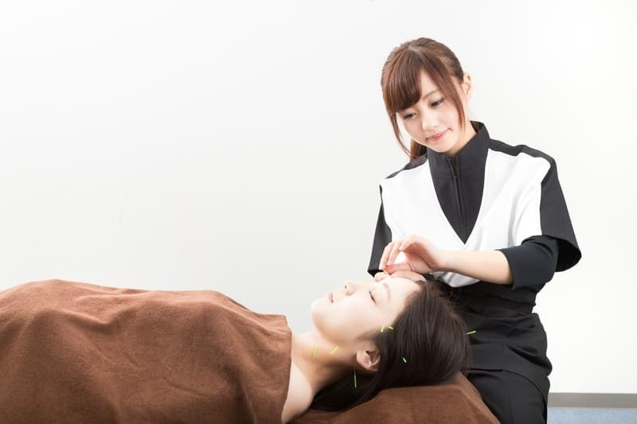

クマの鍼灸
目の下の血行不良・色素沈着・たるみによって影や色味が生じる状態で、タイプに合わせた目元の巡りケアと睡眠・体調管理が大切です。
まず知っておきたい要点と改善の流れ
クマは大きく3種類に分かれます。疲労・睡眠不足・冷え・ストレスによる静脈うっ血が原因の「青クマ」、摩擦や紫外線による色素沈着の「茶クマ」、加齢による下まぶたのたるみ・しわ・むくみの影である「黒クマ」です。鉄分やビタミンK・C・E、亜鉛などの栄養不足や、乾燥・アレルギーによる目元のこすりも悪化要因になります。（公式解説）
このようなお悩みはありませんか？
- ✓目の下に青みや赤紫の色味があり、疲れて見られる（青クマ）
- ✓目の周りが茶色くくすみ、角度を変えても色が変わらない（茶クマ）
- ✓下まぶたのたるみや膨らみ、むくみによって影ができる（黒クマ）
- ✓眼精疲労・睡眠不足・冷え・ストレスが重なるとクマが濃くなる
当院の施術アプローチ・改善の流れ
なぜ鍼灸で改善へ向かうのか？（作用機序の図解）
クマに対する鍼灸は、神経性炎症・掻痒（かゆみ）伝達と自律神経の鎮静機序を通じて、お体本来の回復力を引き出します。

湿疹・傷口への直接刺激を避け、曲池・血海・築賓・三陰交など全身の調整穴へアプローチします。
痒み感覚を伝える神経経路の過敏性を鎮め、「かゆい→掻く→悪化」の悪循環を断ちます。
交感神経の過緊張や夜間覚醒を和らげ、皮膚の修復が進みやすい血流と睡眠環境を整えます。
標準の保湿・外用・内服治療と協調し、ストレスや季節変化で悪化しにくい土台を支えます。
院長YouTube解説・関連動画
クマを大きく分けると、黒クマ、茶クマ、青クマの3種類
クマには種類があります。クマは一般的に寝不足や疲れによってでできるものであると思われがちですが、種類によって原因が違います。
クマを大きく分けると、黒クマ、茶クマ、青クマ、の3種類に分けることができます。種類によって原因が違うため、改善方法も違います。
鍼灸によってクマを改善する場合、症状に合わせて鍼を行っていきます。
クマの原因は種類によって違う
クマの原因は種類によって違います。
青クマの原因は、血行不良です。血行不良によって静脈のうっ血が起こり青く見えるのです。疲れやストレス、睡眠不足、冷え症などによって血液の流れが悪くなると、青クマができます。
茶クマの原因は、色素沈着です。目元の皮膚はとても薄いため、洗顔などの時に目元を擦って起きる摩擦に非常に弱いです。皮膚が刺激を受け、色素沈着が起きると茶クマになります。
黒クマの原因は、下瞼のしわやたるみや顔の浮腫みです。しわやたるみが目元に影をつくることで窪んだように見えるのです。加齢によって起こる場合は黒クマです。
・血行の悪化
血行が悪化すると、酸素や栄養分が十分に運ばれず、皮膚の下の微細な血管が透けて見えることが増えます。疲労、睡眠不足、ストレスなどが血行を悪化させる要因となることが知られています。
年齢を重ねるにつれて、皮膚のコラーゲンやエラスチンが減少し、皮膚が薄くなります。これにより、目の下の青紫色の血管が透けて見えやすくなります。
家族歴、特に親や祖父母がクマを持っている場合、遺伝的な要因が関係している可能性が高いです。遺伝的なクマは、若い年齢から現れることが多いです。
・アレルギー
花粉症や食物アレルギーなど、アレルギーの影響で眼が痒くなり、こすったりすると、目の周辺の皮膚が刺激され、クマの原因となることがあります。
・腫れや水分の蓄積
目の周りのリンパの流れが悪くなると、老廃物や水分が滞留しやすくなります。これにより、クマだけでなく目の下のたるみや腫れとしても現れることがあります。
・皮膚の色素沈着
紫外線の影響や炎症、摩擦などでメラニン色素が増加し、目の下の皮膚に色素が沈着することがあります。
・喫煙やアルコールの過剰摂取
喫煙は血行を悪化させ、アルコールは体内の水分バランスを乱します。これらの要因が組み合わさることで、クマの原因となることがあります。
・栄養不足
鉄分やビタミンK、ビタミンCなどの栄養素の不足は、クマの原因となることが知られています。
・生活習慣
不規則な生活、深夜までの作業、食生活の乱れなど、日常の生活習慣がクマの原因となることもあります。
・皮膚の乾燥
乾燥すると皮膚は薄くなり、透明感が増す。その結果、下の血管が透けて見えるようになることがあります。
クマの症状は、目の下の影
クマの症状は、目の下の影です。種類によって色が違うため、見え方が変わりますが、クマがあると疲れているような印象の顔になってしまいます。
青クマは色が青いこともあれば、赤紫や黒に近い色に見えることもあります。茶クマは色が茶色く、鏡などでどの角度から見ても質感が変わらないのが特徴です。
・血行性のクマ
青みがかった色をしているクマです。特に疲れた日や寝不足の時に強く現れることが多いです。
・構造性のクマ
皮膚の色そのものではなく、影として現れることが多いです。ライティングや角度によっては、クマが目立たなくなることもあります。
・色素沈着性のクマ
茶色っぽいクマとして現れます。夏の後や、目をこすった後などに特に現れやすいです。
・液体蓄積性のクマ
目の下が膨らんで見え、クマとして認識されます。圧迫すると少しへこみます。

クマの改善方法は種類によって違います。
青クマの場合は、鍼灸は非常に即効性が高い改善方法です。鍼灸で血行を良くすることで改善します。さらに、生活習慣の改善やセルフケアも改善において必要になります。
茶クマの場合は、レーザーなどによって改善を行います。鍼灸で改善を行う際は、鍼灸で肌のターンオーバーを正常にすることで改善が期待できます。
黒クマの場合は、目の周りの脂肪やたるみを取り除くことで改善します。鍼灸によってたるんでいる筋肉の引き締めを行うとともに、セルフケアによって筋肉のたるみ解消も必要です。
・化粧品やスキンケア
クマを隠すための最も手軽な方法はコンシーラーやファンデーションを用いることです。色素沈着性のクマの場合は美白成分を含むスキンケア製品が効果的です。
・美容皮膚科
レーザーを使用して皮膚の色素を減少させたり、新しいコラーゲンの生成を促すことで、クマを改善することができます。また、目の下のボリュームの喪失がクマの原因となっている場合、ヒアルロン酸などのフィラーを注射することで、その部分のボリュームを回復させ、クマを目立たなくすることができます。
・生活習慣の見直し
不規則な生活や睡眠不足はクマの原因となるため、質の良い睡眠を確保しましょう。体内の水分バランスを維持し、浮腫みを防ぐために塩分の摂取を控えめにし、ビタミンやミネラルを豊富に含む食事を心がけることも重要です。ストレスも血行を悪化させる要因です。ストレスを減少させる方法を見つけることも大切です。
・ビタミンK
クマの原因の1つに細かい血管の透明度の増加が考えられます。ほうれん草、ブロッコリー、カリフラワー、小松菜、納豆などに含まれているビタミンKは血液の凝固に役立ち、血管の健康をサポートすると言われています。
・ビタミンC
いちご、キウイフルーツ、オレンジ、レモン、グレープフルーツ、パプリカ、ブロッコリーなどに含まれているビタミンCはコラーゲンの生成をサポートし、アンチオキシダントとして働き、肌の健康を維持します。
・ビタミンE
アーモンド、ひまわりの種、カシューナッツ、スピルリナ、アボカド、魚、とうふなどに含まれるビタミンEは皮膚の修復を助け、アンチオキシダントとして紫外線などの外部のダメージから肌を守ります。
赤身の肉、ほうれん草、レンズ豆、大豆、カシューナッツ、海藻、かぼちゃの種などに含まれている鉄分が不足すると貧血の原因となり、クマの原因となることもあります。
牡蠣、牛肉、鶏肉、カシューナッツ、アーモンド、全粒穀物、乳製品などに含まれている亜鉛は肌の修復をサポートし、免疫機能を強化します。
クマの原因はいろいろありますが、体の内側から改善していくことが大事です。鍼灸によって改善は可能ですが、効果を十分に発揮させるためには、体全体が健康であることが大事なのです。
クマを改善するためには、クマだけにアプローチするのではなく、ストレスを解消したりホルモンバランスを整えたりすることに対してもアプローチしましょう。
皮膚のお悩みのツボ図解とセルフケア
実際の施術ではお一人おひとりの体質・症状に合わせて選穴しますが、皮膚症状（アトピー性皮膚炎・慢性蕁麻疹・掻痒感）の臨床でよく用いられる代表的なツボの目安です。

📌 代表的なツボの詳細一覧表を開く（6穴） ▼
| ツボ名 | 位置の目安 | 主な狙い | セルフケアの注意点 |
|---|---|---|---|
| 曲池（きょくち） | 肘を曲げた外側の横ジワ先端 | 皮膚の熱感・炎症・掻痒感の鎮静 | 肘に湿疹・びらん・掻き傷がある場合は直接触れない |
| 血海（けっかい） | 膝のお皿の内側上端から指3本分上 | 蕁麻疹・掻痒・末梢循環の調整 | 皮疹部の摩擦・温灸は痒みを増悪させるため回避 |
| 合谷（ごうこく） | 手の甲、親指と人差し指の骨が交わる手前 | 顔面〜上半身の皮膚トラブル・自律神経調整 | 妊娠中の強刺激は避ける。手荒れ・亀裂時は押圧しない |
| 三陰交（さんいんこう） | 内くるぶし頂点から指4本分上、すね骨の後ろ際 | 乾燥肌・夜間掻痒・体質バランス調整 | 妊娠中の強刺激は避ける。保湿後に清潔な手で優しく |
| 築賓（ちくひん） | 内くるぶしから指7本分上、ふくらはぎ内側 | 慢性蕁麻疹・アレルギー体質・皮膚炎症緩和 | 強く揉まず心地よい圧で数秒キープ |
| 百虫窩（ひゃくちゅうか） | 血海からさらに指1本分ほど上 | 強い痒み・蕁麻疹・湿疹の鎮痒サポート | 皮膚バリアを傷つけないよう必ず指の腹を使用 |
国際査読論文の科学的エビデンス
国際的な医学データベース（PubMed・Cochrane等）で報告されている皮膚症状（アトピー性皮膚炎・慢性蕁麻疹・掻痒感）領域の代表的な査読済み鍼灸研究をまとめています（標準治療との併用や研究上の限界を含めて正確に掲載）。
📚 査読論文データ・PubMed出典リンクを開く（4件） ▼
| 年・研究デザイン | 対象・規模 | 主な結果 | 限界・出典 |
|---|---|---|---|
| 2023年 多施設3群RCT | 慢性特発性蕁麻疹 330名（3大学病院） | 4週時のUAS7変化量は真鍼-8.2 vs シャム-4.1 vs 待機-2.2と統計的有意差を確認。 | 最小臨床的重要差には未達・短期追跡。 Ann Intern Med (PMID: 37956431) |
| 2024年 メタ解析 | アトピー性皮膚炎 8 RCTs（n=463） | SCORAD（MD -10.61, p=0.004）、掻痒VAS（MD -14.71, p<0.00001）、DLQI（p<0.0001）が有意改善。 | EASI・IgEは有意差なし、大規模検証が課題。 BMJ Open (PMID: 39638592) |
| 2021年 シャム対照RCT | 軽〜中等症アトピー性皮膚炎 36名（韓国） | 4週時の総SCORAD変化は真鍼-11.83 vs シャム+0.45（P<0.0001）、終了4週後も持続。 | 単施設・小規模（重症例への外挿は慎重）。 BMC Complement Med Ther (PMID: 33926433) |
| 2023年 メタ解析 | 難治性掻痒（尿毒症性掻痒）7 RCTs（n=504） | 通常治療比で有効率RR 1.28（P=0.003）、透析併用でRR 1.42（P=0.0002）と有意に掻痒軽減。 | 透析患者対象のため一般皮膚疾患への外挿に留意。 J Pain Symptom Manage (PMID: 36055470) |
参考文献・出典
- 銀座そうぜん鍼灸院「クマの公式解説ページ」
- 2023年 多施設3群RCT（慢性特発性蕁麻疹 330名（3大学病院））— Ann Intern Med (PMID: 37956431)
- 2024年 メタ解析（アトピー性皮膚炎 8 RCTs（n=463））— BMJ Open (PMID: 39638592)
- 2021年 シャム対照RCT（軽〜中等症アトピー性皮膚炎 36名（韓国））— BMC Complement Med Ther (PMID: 33926433)
- 2023年 メタ解析（難治性掻痒（尿毒症性掻痒）7 RCTs（n=504））— J Pain Symptom Manage (PMID: 36055470)
よくある質問（FAQ）
Q. どのタイプのクマに鍼灸が向いていますか？▼
Q. 自宅で目元のツボを押すときの注意点はありますか？▼
あわせて読まれる関連疾患（皮膚のお悩み）
ニキビの強い炎症や潰した刺激の後に残る赤み・色素沈着・凹凸で、皮膚科ケアと併用しながら肌の代謝と再生力を高めることが大切です。
表皮にメラニン色素が過剰に沈着して茶褐色の斑点となる肌悩みで、種類に応じた医療ケアと新陳代謝・巡りを整える内側ケアが重要です。
膝から下や足関節周囲に網状の皮斑と強い痛みを伴う潰瘍を繰り返す難治性疾患です。皮膚科管理と併用し、潰瘍予防と回復を支えます。
花粉が肌に付着することでまぶたや頬、首に乾燥・赤み・かゆみが起きる皮膚炎です。保湿と避粉に加え、4つのツボで体質を整えます。
黄色ブドウ球菌などの細菌感染で皮膚や皮下に膿が溜まる感染症です。抗菌薬や外科処置を最優先に、安定期の体質ケアを支えます。
自己免疫が筋肉や皮膚を攻撃し筋力低下や倦怠感を起こす膠原病（指定難病）です。専門医治療を最優先に、安定期の体調維持を支えます。
おひとりで悩まず、まずはご相談ください
銀座本院・川口・大宮・横浜・博多・田無の各院でご予約を承っております。